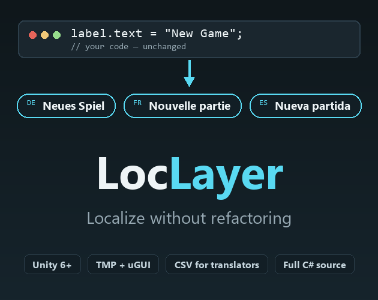
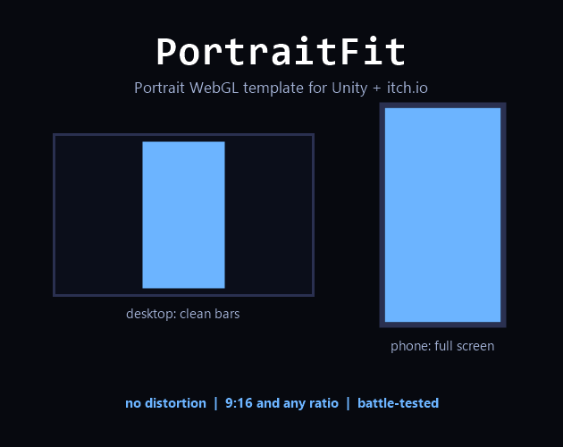
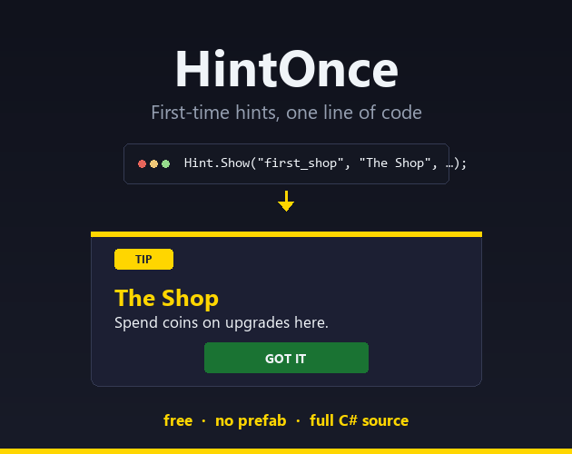

Unity tools and games, full C# source
I am Daniel Schnurbusch, a solo developer working in Unity and C#. Every tool here started as a problem in one of my own projects, got solved once properly, and was then pulled out and documented so it works in yours too.
No DLLs, no black boxes, no runtime dependencies beyond what Unity already ships.
Tools
Four editor and runtime tools for Unity 6 and newer. Each one does a single job and stays out of the way.


PortraitFit
A WebGL template for portrait games. Clean letterbox bars on desktop, full screen on phones, no distortion anywhere.
Details
Games
Where the tools come from.
Famechaser
A streaming simulation about the tug of war for viewers, followers and fame. Built in Unity, playable in the browser. ChipForge, LocLayer, PortraitFit and HintOnce all began as parts of this game.
DetailsAbout
Schnurbusch Games is one person. I build in Unity with C#, ship the result, and then extract the reusable parts as tools. Everything you see here was written, tested and documented by me.
Questions, bug reports and feature requests are welcome and I answer all of them personally, in English or German.
Contact: daniel.schnurbusch@web.de